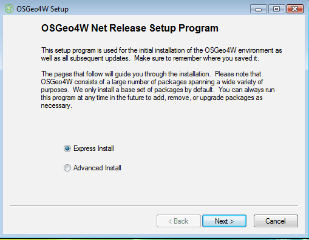
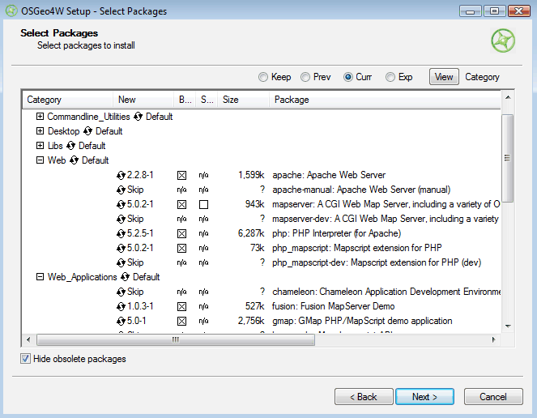
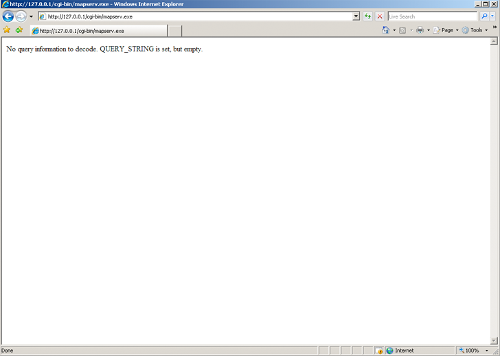

| Revision: | $Revision: 9032 $ |
|---|---|
| Date: | $Date: 2009-05-20 17:37:07 -0300 (Wed, 20 May 2009) $ |
| Author: | Jeff McKenna |
| Contact: | jmckenna at gatewaygeomatics.com |
| Author: | David Fawcett |
| Contact: | david.fawcett at moea.state.mn.us |
| Author: | Howard Butler |
| Contact: | hobu.inc at gmail.com |
Contents
MapServer is a popular Open Source project whose purpose is to display dynamic spatial maps over the Internet. Some of its major features include:
In its most basic form, MapServer is a CGI program that sits inactive on your Web server. When a request is sent to MapServer, it uses information passed in the request URL and the Mapfile to create an image of the requested map. The request may also return images for legends, scale bars, reference maps, and values passed as CGI variables.
See also
The Glossary contains an overview of many of the jargon terms in this document.
MapServer can be extended and customized through MapScript or templating. It can be built to support many different vector and raster input data formats, and it can generate a multitude of output formats. Most pre-compiled MapServer distributions contain most all of its features.
See also
Note
MapScript provides a scripting interface for MapServer for the construction of Web and stand-alone applications. MapScript can used independently of CGI MapServer, and it is a loadable module that adds MapServer capability to your favorite scripting language. MapScript currently exists in PHP, Perl, Python, Ruby, Tcl, Java, and .NET flavors.
This guide will not explicitly discuss MapScript, check out the MapScript Reference for more information.
The basic architecture of MapServer applications.
A simple MapServer application consists of:
Map File - a structured text configuration file for your MapServer application. It defines the area of your map, tells the MapServer program where your data is and where to output images. It also defines your map layers, including their data source, projections, and symbology. It must have a .map extension or MapServer will not recognize it.
See also
Geographic Data - MapServer can utilize many geographic data source types. The default format is the ESRI shapefile. Many other data formats can be supported, this is discussed further below in Adding data to your site.
See also
HTML Pages - the interface between the user and MapServer . They normally sit in Web root. In it’s simplest form, MapServer can be called to place a static map image on a html page. To make the map interactive, the image is placed in an html form on a page.
CGI programs are ‘stateless’, every request they get is new and they don’t remember anything about the last time that they were hit by your application. For this reason, every time your application sends a request to MapServer, it needs to pass context information (what layers are on, where you are on the map, application mode, etc.) in hidden form variables or URL variables.
A simple MapServer CGI application may include two html pages:
Initialization File - uses a form with hidden variables to send an initial query to the http server and MapServer. This form could be placed on another page or be replaced by passing the initialization information as variables in a URL.
Template File - controls how the maps and legends output by MapServer will appear in the browser. By referencing MapServer CGI variables in the template html, you allow MapServer to populate them with values related to the current state of your application (e.g. map image name, reference image name, map extent, etc.) as it creates the html page for the browser to read. The template also determines how the user can interact with the MapServer application (browse, zoom, pan, query).
See also
MapServer CGI - The binary or executable file that receives requests and returns images, data, etc. It sits in the cgi-bin or scripts directory of the http server. The Web server user must have execute rights for the directory that it sits in, and for security reasons, it should not be in the web root. By default, this program is called mapserv
HTTP Server - serves up the html pages when hit by the user’s browser. You need a working HTTP (Web) server, such as Apache or Microsoft Internet Information Server, on the machine on which you are installing MapServer.
OSGeo4W is a new Windows installer that downloads and/or updates MapServer, add-on applications, and also other Open Source geospatial software. The following steps illustrate how to use OSGeo4W:
Download OSGeo4W http://download.osgeo.org/osgeo4w/osgeo4w-setup.exe
Execute (double-click) the .exe
Choose “Advanced” install type
Note
Express contains options for higher-level packages such as MapServer, GRASS, and uDig. Advanced gives you full access to choosing commandline tools and applications for MapServer that are not included in the Express install
Select packages to install
Note
Click on the “Default” text beside the higher-level packages (such as Web) to install all of Web’s sub-packages, or click on the “Skip” text beside the sub-package (such as MapServer) to install that package and all of its dependencies.
Let the installer fetch the packages.
Run the apache-install.bat script to install the Apache Service.
Note
You must run this script under the “OSGeo4W Shell”. This is usually available as a shortcut on your desktop
Note
A apache-uninstall.bat script is also available to remove the Apache service installation.
Start Apache from the OSGeo4W shell and navigate to http://127.0.0.1
apache-restart.bat
Verify that MapServer is working
MapServer runs on Linux, Windows, Mac OS X, Solaris, and more. To compile or install some of the required programs, you may need administrative rights to the machine. People commonly ask questions about minimum hardware specifications for MapServer applications, but the answers are really specific to the individual application. For development and learning purposes, a very minimal machine will work fine. For deployment, you will want to investigate Optimization of everything from your data to server configuration.
You need a working and properly configured HTTP (Web) server, such as Apache or Microsoft Internet Information Server, on the machine on which you are installing MapServer. OSGeo4W contains Apache already, but you can reconfigure things to use IIS if you need to. Alternatively, MS4W can be used to install MapServer on Windows.
If you are on a Windows machine, and you don’t have a HTTP server installed, you may want to check out MS4W, which will install a pre-configured HTTP server, MapServer, and more. The FGS Linux Installer provides similar functionality for several Linux distributions.
This introduction will assume you are using pre-compiled OSGeo4W Windows binaries to follow along. Obtaining MapServer or Linux or Mac OS X should be straightforward. Visit Download for installing pre-compiled MapServer builds on Mac OS X and Linux.
You will also need a Web browser, and a text editor (vi, emacs, notepad, homesite) to modify your html and mapfiles.
In addition to learning how the different components of a MapServer application work together and learning Map File syntax, building a basic application requires some conceptual understanding and proficiency in several skill areas.
You need to be able to create or at least modify HTML pages and understand how HTML forms work. Since the primary purpose of a MapServer application is to create maps, you will also need to understand the basics of geographic data and likely, map projections. As your applications get more complex, skills in SQL, DHTML/Javascript, Java, databases, expressions, compiling, and scripting may be very useful.
The .map file is the basic configuration file for data access and styling for MapServer. The file is an ASCII text file, and is made up of different objects. Each object has a variety of parameters available for it. All .map file (or mapfile) parameters are documented in the mapfile reference. A simple mapfile example displaying only one layer follows, as well as the map image output:
NAME "sample"
STATUS ON
SIZE 600 400
SYMBOLSET "../etc/symbols.txt"
EXTENT -180 -90 180 90
UNITS DD
SHAPEPATH "../data"
IMAGECOLOR 255 255 255
FONTSET "../etc/fonts.txt"
#
# Start of web interface definition
#
WEB
IMAGEPATH "/ms4w/tmp/ms_tmp/"
IMAGEURL "/ms_tmp/"
END
#
# Start of layer definitions
#
LAYER
NAME 'global-raster
TYPE RASTER
STATUS DEFAULT
DATA bluemarble.gif
END
Rendered Bluemarble Image
Note
MAP
NAME "sample"
EXTENT -180 -90 180 90 # Geographic
SIZE 800 400
IMAGECOLOR 128 128 255
END
LAYER
NAME bathymetry
TYPE RASTER
STATUS DEFAULT
DATA bath_mapserver.tif
END
See also
Vector layers of TYPE point, line, or polygon can be displayed. The following example shows how to display only lines from a TYPE polygon layer, using the OUTLINECOLOR parameter:
LAYER
NAME "world_poly"
DATA 'shapefile/countries_area.shp'
STATUS ON
TYPE POLYGON
CLASS
NAME 'The World'
STYLE
OUTLINECOLOR 0 0 0
END
END
END # layer
See also
Rendered Bluemarble image with vector boundaries
CLASS
NAME "Primary Roads"
STYLE
SYMBOL "circle"
COLOR 178 114 1
SIZE 15
END #style1
STYLE
SYMBOL "circle"
COLOR 254 161 0
SIZE 7
END #style2
END
Rendered Bluemarble image with styled roads
MAP
NAME "sample"
EXTENT -180 -90 180 90 # Geographic
SIZE 800 400
IMAGECOLOR 128 128 255
SYMBOLSET "../etc/symbols.txt"
END
where symbols.txt might contain:
SYMBOL
NAME "ski"
TYPE PIXMAP
IMAGE "ski.gif"
END
and the mapfile would contain:
LAYER
...
CLASS
NAME "Ski Area"
STYLE
SYMBOL "ski"
END
END
END # layer

Rendered Bluemarble image with skier symbol
An example LABEL object that references one of the above fonts might look like:
LABEL
FONT "sans-bold"
TYPE truetype
SIZE 10
POSITION LC
PARTIALS FALSE
COLOR 100 100 100
OUTLINECOLOR 242 236 230
END # label
Rendered Bluemarble image with skier symbol and a label
MapServer supports three types of CLASS expressions in a LAYER:
String comparisons
(EXPRESSION "africa")
Regular expressions
(EXPRESSION /^9|^10/)
Logical expressions
([POPULATION] > 50000 AND '[LANGUAGE]' eq 'FRENCH')
Note
Logical expressions should be avoided wherever possible as they are very costly in terms of drawing time.
See also
Added to MapServer 4.10, any part of the mapfile can now be stored in a separate file and added to the main mapfile using the INCLUDE parameter. The filename to be included can have any extension, and it is always relative to the main .map file. Here are some potential uses:
The following is an example of using mapfile includes to include a layer definition in a separate file:
If ‘shadedrelief.lay’ contains:
LAYER
NAME 'shadedrelief'
STATUS ON
TYPE RASTER
DATA 'GLOBALeb3colshade.jpg'
END
therefore the main mapfile would contain:
MAP
...
INCLUDE "shadedrelief.lay"
...
END
The following is an example of a mapfile where all LAYER s are in separate .lay files, and all other objects (WEB, REFERENCE, SCALEBAR, etc.) are stored in a “.ref” file:
NAME "base"
#
# include reference objects
#
INCLUDE "../templates/template.ref"
#
# Start of layer definitions
#
INCLUDE "../layers/usa/usa_outline.lay"
INCLUDE "../layers/canada/base/1m/provinces.lay"
INCLUDE "../layers/canada/base/1m/roads_atlas_of_canada_1m.lay"
INCLUDE "../layers/canada/base/1m/roads_atlas_of_canada_1m_shields.lay"
INCLUDE "../layers/canada/base/1m/populated_places.lay"
END # Map File
Warning
Mapfiles must end with the .map extension or MapServer will not recognize them. Include files can have any extension you want, however.
See also
MapServer version 5.2 OUTPUT=GIF OUTPUT=PNG
OUTPUT=JPEG OUTPUT=WBMP SUPPORTS=PROJ SUPPORTS=FREETYPE
SUPPORTS=WMS_SERVER INPUT=SHAPEFILE
You can also send a HTTP request directly to the MapServer CGI program without passing any configuration variables (e.g. http://your.domain.name/cgi-bin/ms4/mapserv.exe). If you receive the message, ‘No query information to decode. QUERY_STRING not set.’, your installation is working.
Download the MapServer Demo. UnZip it and follow the directions in ReadMe.txt. You will need to move the demo files to their appropriate locations on your HTTP server, and modify the Map File and html pages to reflect the paths and URLs of your server. Next, point your browser to init.html and hit the ‘initialize button’. If you get errors, verify that you have correctly modified the demo files.
Now that you have a working MapServer demo, you can use the demo to display your own data. Add new LAYERs to your Map file that refer to your own geographic data layers. (You will probably want to delete the existing layers or set their status to OFF.)
Unless you are adding layers that fall within the same geographic area as the demo, modify MAP EXTENT to match the extent of your data. To determine the extent of your data, you can use ogrinfo. If you have access to a GIS, you could use that as well. The MAP EXTENT needs to be in the units of your output projection.
If you add geographic data layers of different projections, you will need to modify your Map File to add a PROJECTION block to the MAP (output projection ) and each of the LAYER (existing layer projection).
MapServer supports several data input formats ‘natively’, and many more if it is compiled with the open source libraries GDAL and OGR.
Vector data includes features made up of points, lines, and polygons. MapServer supports ESRI shapefiles by default, but it can be compiled to support spatially enabled databases such as PostgreSQL-PostGIS, Geography Markup Language (GML), MapInfo, delimited text files, and more formats with OGR.
See the Vector Data reference for examples on how to add different geographic data sources to your MapServer project.
Raster data is image or grid data. By default, MapServer supports Tiff/GeoTiff, and EPPL7. With GDAL, it supports GRASS, Jpeg2000, ArcInfo Grids, and more formats. If you do compile MapServer with GDAL, which includes tiff support, do not compile with native tiff support, as this will cause a conflict. More specific information can be found in the Raster Data reference.
Because the earth is round and your monitor (or paper map) is flat, distortions will occur when you display geographic data in a two-dimensional image. Projections allow you to represent geographic data on a flat surface. In doing so, some of the original properties (e.g. area, direction, distance, scale or conformity)of the data will be distorted. Different projections excel at accurately portraying different properties. A good primer on map projections can be found at the University of Colorado.
With MapServer, if you keep all of your spatial data sets in the same projection (or unprojected Latitude and Longitude), you do not need to include any projection info in your Map File. In building your first MapServer application, this simplification is recommended.
On-the-fly projection can be accomplished when MapServer is compiled with Proj.4 support. Instructions on how to enable Proj.4 support on Windows can be found on the Wiki.
There are two primary ways to query spatial data. Both methods return data through the use of templates and CGI variable replacement. A QUERYMAP can be used to map the results of the query.
To be queryable, each mapfile LAYER must have a TEMPLATE defined, or each CLASS within the LAYER must have a TEMPLATE defined. More information about the CGI variables used to define queries can be found in the MapServer CGI Reference.
The user selects features based on data associated with that feature. ‘Show me all of the lakes where depth is greater than 100 feet’, with ‘depth’ being a field in the shapefile .dbf or the spatial database. Attribute queries are accomplished by passing query definition information to MapServer in the URL (or form post). Mode=itemquery returns a single result, and mode=itemnquery returns multiple result sets.
The request must also include a QLAYER, which identifies the layer to be queried, and a QSTRING which contains the query string. Optionally, QITEM, can be used in conjunction with QSTRING to define the field to be queried. Attribute queries only apply within the EXTENT set in the map file.
The user selects features based on a click on the map or a user-defined selection box. Again the request is passed through a URL or form post. By setting mode=QUERY, a user click will return the one closest feature. In mode=NQUERY, all features found by a map click or user-defined selection box are returned. Additional query options can be found in the CGI.
See: OpenLayers http://openlayers.org
Data organization is at least as important as hardware configuration in optimizing a MapServer application for performance. MapServer is quite efficient at what it does, but by reducing the amount of processing that it needs to do at the time of a user request, you can greatly increase performance. Here are a few rules:
See also
Register and post questions to the MapServer Users listserv. Questions to the list are usually answered quickly and often by the developers themselves. A few things to remember:
MapServer users and developers can be found on Internet Relay Chat. The channel is #mapserver on irc.freenode.net.
Perry Nacionales built a great Tutorial on how to build a MapServer application. You are invited to extend the collection of examples if you see cases that are missing.
Download the MapServer Test Suite for a demonstration of some MapServer functionality.
Web Mapping Illustrated , a new book by Tyler Mitchell that describes well and provides real-world examples for the use of Web mapping concepts, Open Source GIS software, MapServer, Web services, and PostGIS.
Mapping Hacks , by Schuyler Erle, Rich Gibson, and Jo Walsh, creatively demonstrates digital mapping tools and concepts. MapServer only appears in a handful of the 100 hacks, but many more are useful for concepts and inspiration.
Beginning MapServer: Opensource GIS Development , by Bill Kropla, is a new book focusing on MapServer. So new, I haven’t seen it yet. According to the publisher, it covers installation and configuration, basic MapServer topics and features, incorporation of dynamic data, advanced topics, MapScript, and the creation of an actual application.